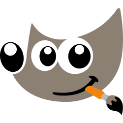

GIMP
Frozen in Launcher GPL-3.0Extensible raster image editor for photo retouching, texturing, and asset batching.
Role in the Game Stack
GIMP (GNU Image Manipulation Program) provides raster editing, asset cleanup, texture channel manipulation, and format conversion. Equipped with GEGL high-bit-depth color processing and Python scripting, it serves as a workhorse for asset preparation.
Key Capabilities & Strengths
- High bit-depth image processing powered by GEGL
- Extensive channel, mask, and selection toolsets
- Comprehensive file format support including TGA, DDS, and OpenEXR
- Batch automation via Python and Script-Fu
Within sovereign and telemetry-free creative pipelines, GIMP serves as a direct open-source alternative to proprietary software.
OGS Launcher Integration & Frozen Releases
The Open Game Stack Launcher packages verified, immutable builds of GIMP. These releases are cached locally and launched without network access, vendor telemetry, or external licensing servers.
| Version | Size | SHA-256 Checksum | Executable | Notes | Archive |
|---|---|---|---|---|---|
3.2.4 |
195.2 MB | 1e5ace65d0c853955dc806c75fef1ca9db77c23067cfa515a9ad5b32053d021b |
bin/gimp.exe |
Release Notes | Download ZIP |
Project Manifest Configuration (ogs_stack.json)
Pin GIMP to this frozen version in your project repository by declaring it inside your ogs_stack.json manifest:
{
"name": "MyGameProject",
"version": "1.0.0",
"tools": [
{
"id": "gimp",
"version": "3.2.4",
"category": "2D"
}
]
}Open-Source Vital Signs
Project health, licensing, and cross-platform runtime support for GIMP:
| Software License | GPL-3.0 |
|---|---|
| Supported Platforms | Windows Linux macOS |
| Stack Category | 2D |
| Official Website | https://www.gimp.org/ |
| Source Repository | https://gitlab.gnome.org/GNOME/gimp |
Getting Started & Learning Resources
Official documentation, tutorials, and community hubs to help game developers master GIMP:
- [Documentation] GIMP Documentation
- [Tutorials] GIMP Tutorials
- [Documentation] GEGL Documentation